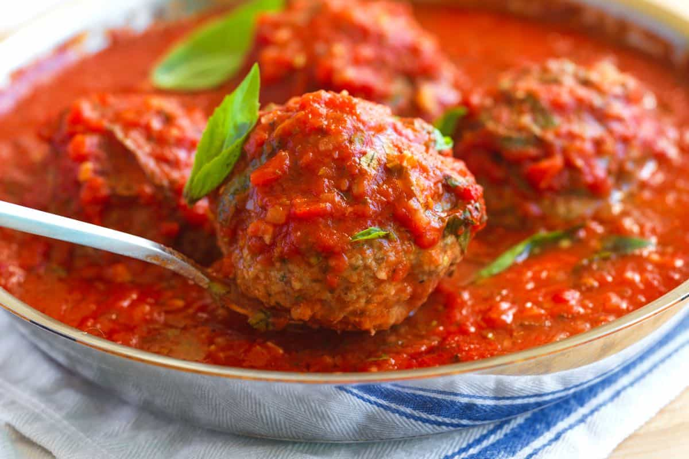

Home
Classic Italian Meatballs

A Bite of Italy: Homemade Italian Meatballs
There's nothing quite like the comforting aroma of simmering Italian
meatballs. These classic meatballs are packed with flavor, thanks to a
blend of savory herbs and spices. Serve them with your favorite pasta,
marinara sauce, or even on a crusty roll for a delicious sandwich. This
recipe is a great starting point, but feel free to customize it to your
liking. Add some chopped fresh herbs like parsley or basil, or include
some grated Parmesan cheese in the meat mixture. You can also experiment
with different types of bread crumbs, such as panko or Italian bread
crumbs.
Ingredients:
- 1 pound ground beef
- 1/2 pound ground pork
- 1/4 cup finely chopped onion
- 2 cloves garlic, minced
- 1/4 cup bread crumbs
- 1/4 cup milk
- 1 egg
- 1/2 teaspoon dried oregano
- 1/4 teaspoon dried basil
- 1/4 teaspoon dried thyme
- 1/4 teaspoon red pepper flakes (optional)
- Salt and pepper to taste
Instructions:
-
In a large bowl, combine ground beef, ground pork, onion, garlic, bread
crumbs, milk, egg, oregano, basil, thyme, red pepper flakes (if using),
salt, and pepper.
- Mix gently until just combined.
- Using your hands, shape the mixture into 1-inch balls.
- Heat a large skillet over medium heat with a little olive oil.
-
Add meatballs to the skillet and cook for 5-7 minutes per side, or until
browned.
- Remove meatballs from the skillet and set aside.
-
If desired, add your favorite marinara sauce to the skillet and simmer
the meatballs in the sauce for an additional 15-20 minutes.
- Enjoy!